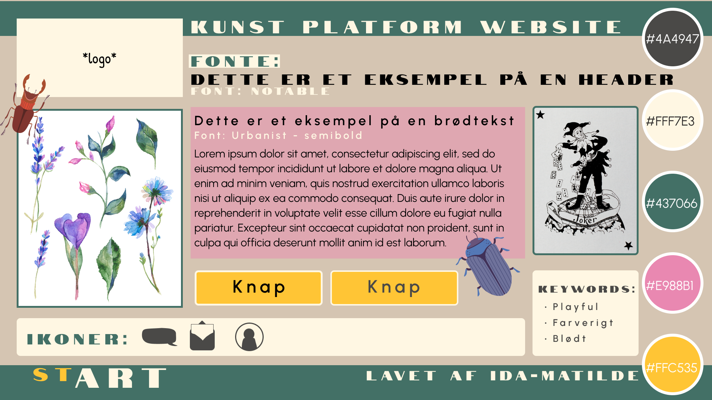

Tema 3
I tema 3 var der fokus på forståelse og anvendelse af UX og UI konventioner. Det betød også at forstå prototyping, usability og testing.
Idé og research til kodet site
Vi fik til opgave at lave et site designet på baggrund af en problemstilling. Mit fokus var et problem fra min egen hverdag. Jeg var lige kommet tilbage fra kunsthøjskole, og havde svært ved at bruge min fritid på at være kreativ. Derfor ville jeg gerne lave et kunstforum for unge, som ville have en platform at poste kunst og blive inspireret. På mit site skulle man kunne lave en profil, uploade billeder og interagerer med opslag.
For at forstå min målgruppe lavede jeg et interview, for at få mere indsigt i design- og udviklingsprocessen. Jeg interviewede en 21-årig kunstner, som også var kommet hjem fra højskole selv. Jeg udførte interviewet med at stille forskellige spørgsmål omkring personens arbejdsliv, fritid og tidsforbrug. De resultater jeg fik var bl.a. at det var svært præcist at vide hvilke steder, der tilbød folk at lave kunst med andre. Interviewet gav mig derfor fokus på at implementere et lokalt aspekt, ved at lave en mulighed for at kunne se begivenheder nær sig.
Moodboard og styletile
Jeg brugte forskellige designprincipper til at udarbejde et moodboard og et styletile. De hjalp meget til at sætte idé på papir, men også at implementere sin målgruppe og research i sine designvalg. Som eksempel kan man se, at mine visuelle valg ændrer sig, jo mere jeg afprøvede.
Til moodboardet brugte jeg billeder af mange forskellige medier, farvepaletter og skrifttyper. Det var for at repræsentere forskellige stilarter og udtryk fra mange forskellige mennesker.
Mit første udkast af et styletile blev også meget farverigt, da jeg valgte temaet “forår”. Den lyserøde farve gav et feminint look, men for ikke at gøre det alt for feminint, prøvede jeg at udbalancere det med en mørkegrøn og grå farve. Min idé var at vælge både feminine og maskuline farver, for at matche flest mulige brugere. Til mine fonte valgte jeg fonten “Notable” til mine titler, som kun har store bogstaver. Til min brødtekst valgte jeg fonten “Urbanist”, som jeg syntes var en god letlæselig kontrast med de små bogstaver, i forhold til den fede titel.
Figur A - Moodboard
Figur B - Første udkast af style tile.
Figur C. Sitemap til kodet site.
Figur D. Desktop wireframe.
Figur E. Desktop prototype.
Prototype og testing
For at starte opbygningen af hjemmesiden lavede jeg et sitemap. Ud fra det kunne jeg lave den rette mappestruktur og navigation på mit site. Ud fra det kunne jeg begynde at designe de enkelte siders wireframe struktur.
Da jeg havde anvendt styletilet til min prototype, udførte jeg to slags brugertest med min Figma prototype. Jeg startede med en 5 sekunders test, som jeg overværede og tog noter til imens en medstuderende styrede testen. Jeg havde tre forskellige testpersoner, hvor jeg ud fra deres svar kunne konkludere, at ud fra mit logo “stART” kunne se det havde noget med kunst at gøre.
Den næste test jeg opsatte var en Tænke-højt test. Der havde testpersonerne fået at vide, at de skulle gå ind på en profil og like en besked. Testen var virkelig nyttig, da jeg fik mange indsigter, som jeg ikke havde kunne have opdaget selv. På baggrund af testpersonernes svar, kunne jeg se at min website formål ikke var helt klart for brugerne. Det prøvede jeg at løse ved bl.a. at anvende flere UI elementer i min næste prototype, og ændre på feed elementerne.
Efter at havde testet med farver og fonte op i en prototype, besluttede jeg mig for at tone ned for farverne. Med mange forskellige farver distraherede layoutet fra brugernes egne billeder. I stedet lavede jeg farverne om til en mere harmonisk farvepalette, med kun den gule som stærk kontrast, til at få vigtige punkter og funktioner highlightet for brugeren.
Html og CSS på mit site
Jeg valgte at kode 3 sider. Forside, Begivenhed og en profil. En vigtig funktion i mine tre kodede sites var mit layout. På alle mine hjemmesider, skulle mine billeder ændre position på skærmen. Jeg lavede en media query, som fik layoutet til at rette sig responsivt fra mobile til desktop, op i to kolonner. Ved hjælp af Order, kodede jeg profilbilledet til at ændre side. Det gjorde jeg for at opslagenes opsætning spejlede sig i hinanden på desktop versionen.


Endelige versioner af styletile og prototype
Præsentation
I slutningen af temaet præsenterede vi vores idé som et pitch. Vi havde 7 minutter til at fremlægge vores site. I min præsentation prøvede jeg både at vise stykker af kode, men også min designprocess og idéudvikling. Ved at præsentere det, fik jeg brugbar kritik fra undervisere og medstuderende. Blandt andet blev der kommenteret på, at jeg brugte mig selv som person med et problem. Det kunne også gøres med en undersøgelse af andre unge, eller at bruge en user story. Mit formål, som var at blive inspireret til sin hobby igen, blev også lidt væk gennem min udviklingsproces. Det kunne give projektet en mere brugbar retning, at være mere fokuseret på min problemløsning gennem processen.
Fra min prototype til det kodede site, skete der også nogle visuelle fejl. Hjemmeside blev for bred, hvilket kan fikses med en max-width. Det ville gøre min tekst mere læsbar, og at layoutet mere sammenhængende. En udfordring som jeg uvidende havde sat mig selv, var at jeg ikke kunne kode funktioner som skulle bruge data. Altså kunne jeg ikke lave en fungerende log-in funktion, upload funktion eller kommentarfelt. Det var vigtige punkter i mit site, men jeg lærte alligevel at få det opsat i min prototype, men måtte se bort fra at kode det.
Hvad lærte jeg?
I dette tema lærte jeg at sætte mine projekter og ideer i perspektiv. Jeg fik en meget større forståelse for, hvad jeg kan kode og min egen tidsprioritering. Det var også meget brugbart at lære at udføre og analysere brugertest. Alt indhold som jeg lærte, brugte jeg i både tema 4 og tema 5.